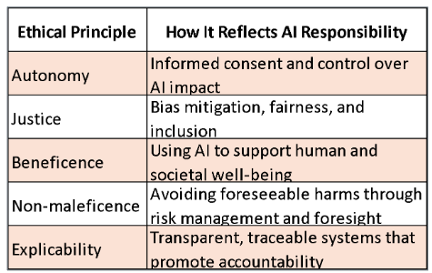

Ethics
AI & Data Ethics in a Hyperconnected World
Ethics and Cybersecurity Issues with AI
Reference:Read chapter 3 and 4: Ravindran, Anton. Will AI Dictate the Future? : From Successful Leaders and Managers from Around the World, Marshall Cavendish International (Asia) Private Limited, 2022. ProQuest Ebook Central, https://ebookcentral.proquest.com/lib/cwm/detail.action?docID=29354182.
Why Ethics Matter in AI and Cybersecurity
The ethics of AI is a relatively new area and fast-changing as AI advances. Ethics is sometimes viewed as too abstract for the technical concerns of data scientists and AI specialists.
From a technical perspective, those who design AI systems need to take steps to avoid any potential risks and deploy contingency measures to mitigate any risk and biases in AI algorithms.
From an organizational perspective, there must be robust procedures, guidelines and frameworks to ensure the ethical use of AI.
Discussion points:
Who is responsible when AI makes a harmful decision?
Who defines “good” use?
How much control should platforms have?
Core Principles of Ethical AI
Autonomy – Respect individual decision-making
- The right of individuals to make informed, uncoerced decisions about how AI systems affect them. This includes clear options, meaningful consent, and respect for personal agency.
Justice – Ensure fairness and eliminate bias
- The obligation to design and deploy AI systems that treat all individuals equitably. This means actively identifying and mitigating bias, ensuring access and fairness across different groups.
Beneficence – Promote well-being
- The principle of using AI to actively enhance human well-being—promoting outcomes that support health, education, safety, and social good.
Non-maleficence – Avoid harm
- The duty to prevent harm, such as discriminatory outcomes, misuse of personal data, or unintended consequences of automation. It requires foresight and safeguards.
Explicability – Make AI systems transparent and understandable
- The commitment to transparency and accountability—making AI systems understandable to users, regulators, and stakeholders. This includes explaining how decisions are made and who is responsible.
Responsibility in AI
Responsibility in AI development involves designing, deploying, and governing AI in ways that uphold human rights, dignity, and societal values.
It emphasizes accountability, traceability, fairness, and ethical foresight.

What is Cybersecurity Ethics? CIA+A Triad
Understanding these pillars helps us design systems that are both secure and ethically responsible.
Confidentiality – Responsible individuals and organizations must protect sensitive data from unauthorized access and ensure that only authorized individuals have access to sensitive data.
Integrity - Responsibility means ensuring that data and systems are accurate, consistent, and protected from tampering.
Accountability - Responsibility is the foundation of accountability where we ensure that actions can be traced back to individuals or systems responsible for them.
Availability - Being responsible means designing systems that are resilient, redundant, and responsive, so that users can access the data and tools they need without disruption.
Cybersecurity as an Ethical Issue
- AI depends on massive datasets which makes it prime targets for attacks.
Ethical duties:
Prevent breaches
Disclose quickly
Protect user trust
- Case: Equifax breach exposed data of 147M people. Executives sold stock before disclosure.
Challenges in AI Ethics
Amplification – harmful content spreads fast.
Bias – in data, labeling, algorithm, and human.
Security – data breaches, misuse of access.
Control – platforms enabling harmful use.
Inequality – tech-driven disparities grow.

Digital Amplification & Echo Chambers
Algorithms optimize for clicks and engagement, not truth.
Reinforces user bias (e.g., political extremism).
Creates self-reinforcing echo chambers through targeting.
- Example: Facebook groups fueling misinformation about [XYZ].
The vast scale, scope, and learning potential of the operating models that embed these algorithms means that harmful messages can be tailored and targeted to, literally, hundreds of millions of people.
Echo chamber effects refers to where the individuals engaged only with posts that supported their existing views, dismissed opposing perspectives, and joined communities that further reinforced their biases.
Data and Labelling Bias
Data Bias
Data bias occurs when the training data used for an AI model is unrepresentative, incomplete, or skewed, leading to unfair or inaccurate outcomes.
Types of data bias include:
Representation bias – certain groups or features are over- or under-represented.
Sample bias – data does not reflect the full population.
Who is (not) in the data.
Measurement bias – how features or outcomes are recorded is flawed.
- How the data is captured.
Example: A facial recognition system trained mostly on lighter-skinned faces may perform poorly on darker-skinned individuals.
Labelling Bias
Bias doesn’t just come from data selection—it also comes from how data is labeled.
Common in crowd-sourced and expert-tagged data.
Examples:
Image: “Woman & man” labeled as “boss and subordinate.”
Gender & race bias in facial recognition tagging.
Algorithm and Human Bias
Algorithm Bias
Systematic and repeatable errors in an AI system caused by flaws in the algorithm itself, such as how it processes data, prioritizes variables, or makes predictions.
Often originates from how the model is constructed or optimized.
Can occur even with unbiased data.
Example: A hiring algorithm that ranks candidates based on keywords from past resumes, unintentionally favoring certain backgrounds.
Human or Cognitive Bias
Bias introduced by developers, data labelers, or users due to personal assumptions, stereotypes, or mental shortcuts.
Influences how data is collected, labeled, or interpreted.
Example: Labelers tagging an image of a man and woman as “boss and assistant” based on stereotype, not actual content.
Can embed unconscious societal prejudices into AI systems.
Security: Abuse or Misuse of AI
Deepfakes are synthetic media—usually videos, audio, or images—that use artificial intelligence (AI), particularly deep learning, to manipulate or fabricate visual and audio content so realistically that it appears authentic.
Deepfakes typically involve face-swapping, voice cloning, or full-body synthesis, making it seem as though a person said or did something they never did.
Abuse of AI: Deepfakes
Celebrity Face Swaps on YouTube
Example: Jim Carrey’s face swapped into The Shining, or Tom Cruise TikTok deepfakes.
Used for entertainment, but often without consent.
Political Disinformation
Example: A deepfakeof Ukrainian President Volodymyr Zelenskyy in 2022 appearing to surrender—intended to mislead during wartime.
Dangerous in conflict or election contexts.
Synthetic Audio of Public Figures
Example: Fake voice recordings of Barack Obama created to warn about the dangers of misinformation.
Highlighted by projects like Buzzfeed’s collaboration with actor Jordan Peele.
-
- Criminals used AI to impersonate the voice of a German parent-company CEO, tricking the UK CFO into transferring €220,000 to a fraudulent account
Misuse of AI with Autonomous Vehicles
When an AV chooses between hitting a pedestrian or crashing, who is responsible? The AI? The manufacturer?
Cybercriminals could remotely hijack or disable AVs, creating safety threats or demanding ransoms.
-
- Users filmed sleeping or playing games on their phone while Autopilot was active—despite warnings that hands must stay on the wheel. Resulted in crashes and fatalities.
-
- A pedestrian was killed when Uber’s test AV failed to classify her as a person crossing the street. Safety driver was distracted. Raised questions about accountability and insufficient safeguards.
Phantom braking in self-driving cars
- Some vehicles unexpectedly brake for non-existent obstacles, creating rear-end collision risk.
Lack of Control: Regulatory and Design Issues with Autonomous Vehicles
Lack of standardized safety testing
- AV companies vary in how they test and report safety, leaving consumers vulnerable to inconsistent protections.
Ethical dilemma scenarios not resolved
- “Trolley problem” cases remain unsolved in AI decision trees (e.g., saving passenger vs. pedestrians)
- What decisions do programmers make?
Control – platforms enabling harmful use
“Control” is about the ethical responsibility and capability of platform owners (like Meta, Google, TikTok) to prevent misuse of their technologies.
The lack of governance mechanisms over how platforms are used by third parties.
The difficulty of enforcing ethical use at scale.
Examples include:
The Cambridge Analytica scandal(Facebook data misuse).
Open APIs or app ecosystems being exploited in ways platform designers didn’t intend (e.g., Google+ 2018 API Breach).
Rogue actors use platforms for coordinated harm:
Failure to prevent livestreaming of violent events (e.g., Christchurch).
Platforms struggled to take content down quickly.
Highlights vulnerabilities of scale and openness.
AI vs AI: Cybersecurity Arms Race
AI as Both Weapon and Shield:
- While AI strengthens cybersecurity defenses, cybercriminals also exploit AI to develop smarter, faster, and more personalized attacks like automated phishing and AI-driven brute force attacks.
AI Fighting AI:
- The only scalable way to counter AI-enhanced cyber threats is with AI-enabled defense systems—models that learn from evolving attack patterns and adapt in real-time to new threats.
Emerging Threats Like Data Poisoning:
- Attackers can compromise machine learning models by feeding them manipulated or false data, leading to incorrect predictions—posing long-term and difficult-to-detect risks.
Security of AI Systems Themselves:
- AI models and training data are vulnerable to breaches; protecting these assets requires encryption, access controls, and data versioning to roll back compromised models.
AI-driven Fraud
AI enables fraudsters to act faster and more covertly, intercepting communication and evading detection, often keeping victims unaware of breaches until it’s too late.
Weaponization of AI for Identity Theft
- Cybercriminals use AI to mimic victims’ online behavior and steal personal data through phishing, synthetic identity creation, and account takeovers.
-
- Visa prevented 80 million fraudulent transactions worth 40 billion worth in 2023, driven by increased digital transactions and sophisticated AI-enabled scams.
Intelligent Warfare
AI-Powered Combat Systems
- AI is transforming warfare through autonomous drones, real-time targeting, satellite surveillance, and smart munitions that can outperform human pilots and strike with precision.
Hypersonic and Autonomous Technologies
- Countries like China and Russia are using AI to develop hypersonic missile engines and autonomous logistics systems, enhancing speed, accuracy, and military dominance.
Global Security Implications
- The rapid militarization of AI raises concerns about untraceable cyberattacks, satellite vulnerabilities, and the ease with which AI-generated weapons (even chemical ones) could be misused.
Making the Blackbox Transparent

AI Governance: Have Explainable AI
Explainable AI, sometimes known as Interpretable AI, refers to methods and techniques that enable humans to understand the results generated by an AI algorithm, hence improving on the governance and ethical dimension of AI.
Explanation: Systems should provide evidence or reason(s) for all output.
Meaningful: Systems should offer explanations that are understandable to individual users.
Accuracy: The answer should accurately describe the system’s process for generating the output.
Knowledge Limits: The system should only operate under limits or conditions for which it was designed.
Security That Thinks
AI security is a set of tools and techniques that leverages AI to autonomously identify any malicious behavior and takes action to defend against potential cyber-threats based on similar or previous activity.
Real-Time Pattern Recognition and Anomaly Detection:
- By analyzing vast volumes of data in real time, AI can identify patterns and anomalies, enhancing threat intelligence and supporting proactive cybersecurity measures.
Zero Trust Architecture:
- AI enables robust “zero trust” security frameworks using real-time multifactor authentication that incorporates behavioral data such as device ID, location, facial recognition, and even typing patterns.
Augmenting Analysts with Explainability:
- Explainable AI helps security teams understand and trust automated decisions, enhancing transparency and complementing human oversight in high-stakes cybersecurity scenarios.
Designing Ethical, Human-Centered AI Systems
Involve diverse stakeholders early
- Helps identify potential blind spots, harms, and unintended consequences before deployment.
Use interpretable models when stakes are high
Choose models that offer transparency (e.g., decision trees, linear models, SHAP) in areas like healthcare, finance, or criminal justice.
When lives or rights are on the line, explainability builds trust and enables accountability.
Include human-in-the-loop checks and balances
Design systems where human judgment remains part of critical decisions—especially in ambiguous or high-risk situations.
Automation should support, not replace, nuanced decision-making.
Regularly audit for unintended harms
Monitor the system’s impact after deployment, including performance across demographic groups.
Even well-designed systems can evolve in harmful ways—ongoing auditing is key to ethical resilience.
APA Citations
If you quote or paraphrase ChatGPT’s output, cite it as a source.
If ChatGPT Suggests a Citation
- Do NOT trust automatically suggested citations without verification.
Instead:
Locate the original source (article, book, report, etc.).
Confirm details (author, title, year, publisher, DOI/URL).
Cite the verified source, not ChatGPT’s suggestion.
If you cannot verify, do not include it.
Key Takeaways
Cite ChatGPT when you directly use its text.
Cite the verified original source when ChatGPT points you to one.
Always check accuracy—your credibility depends on it.
To cite ChatGPT use:
- OpenAI. (2025). ChatGPT [Large language model]. https://chat.openai.com/
Example in-text citation:
- ChatGPT suggested that “…” (OpenAI, 2025).
Trimming a URL for APA style
APA treats ChatGPT as a software (like statistical packages) when you are citing it in your reference list.
APA recommends providing the direct, retrievable URL, not the tracking code.
For example: instead of https://www.journal.com/article/12345?chat-gpt
You can trim it to https://www.journal.com/article/12345
Before making the change
Always double-check the link in a browser or in your library database.
If it works without the tag → remove it.
If only the tagged link works (rare), keep it — but note it’s unusual.